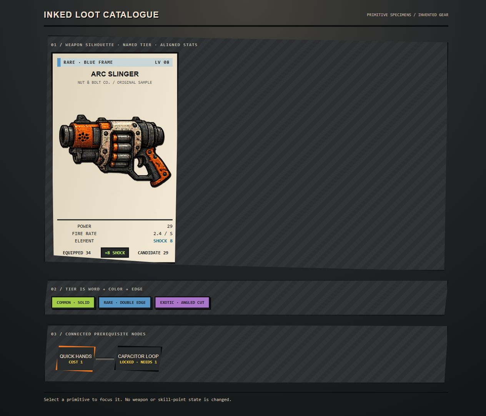
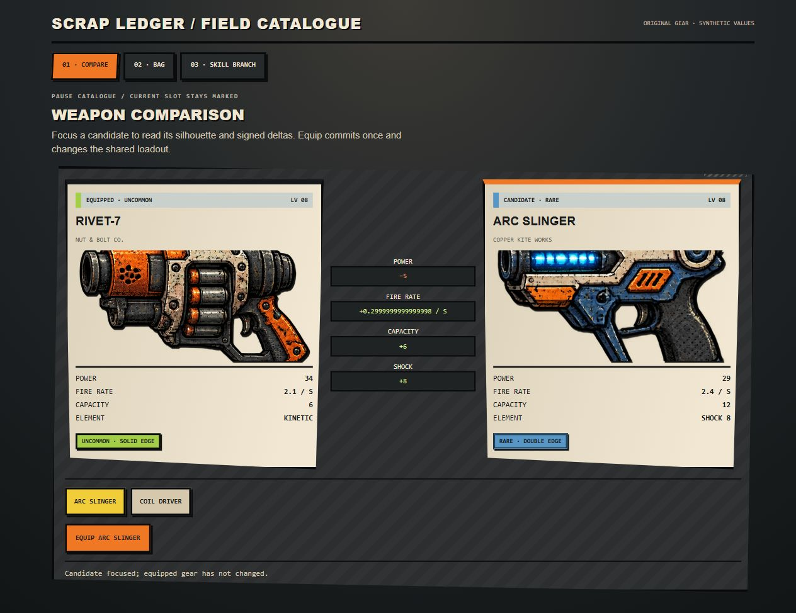
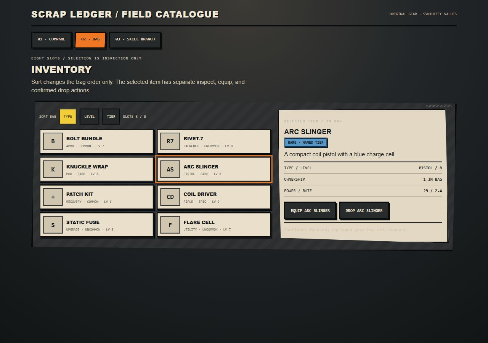
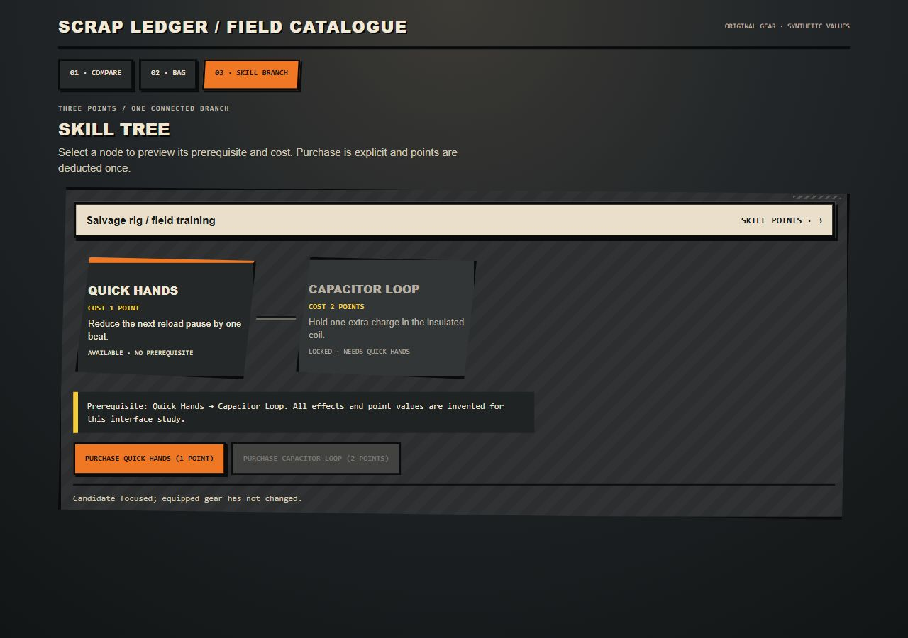

Game UI
Game UIBORDERLANDS 2 / V1.0.0
无主之地 2
一套规则，多种界面。
粗黑线、倾斜面板、武器属性卡、稀有度信号。
2012 第二代
实验性参考包 · Luna / max 作者与独立使用代理 · 本地 Web 示例

查看包内组件样品 ↗01 / INDEPENDENT IMPLEMENTATION
同一 Skill 的三个界面
浏览器检查已完成；具体交互和屏宽记录见 JSON。

WEAPON-COMPARISON
Weapon comparison ↗
Compare the equipped Rivet-7 against a focused candidate with named rarity, element, aligned stats, and signed deltas.

INVENTORY
Inventory ↗
Browse and sort an eight-item bag, inspect one item, and confirm a non-equipped drop explicitly.

SKILL-TREE
Skill tree ↗
Purchase Quick Hands once, unlock its connected Capacitor Loop prerequisite, and spend the remaining points once.
02 / WHAT YOUR AI READS
参考、组件、规则，一起交给 AI。

示例需求
使用 borderlands-2-ui Skill。先读取 SKILL.md、视觉规则、组件和参考图，再为我的游戏制作：Weapon comparison、Inventory、Skill tree。复用本地素材，保留可编辑文字和真实交互状态。
04 / EVIDENCE AND LIMITS
制作记录与验证范围
风格不只来自场景描边；必须同时取样属性卡、分类页和比较状态。
- Experimental 2012-era style interpretation; not an official or pixel-exact recreation.
- Weapon silhouettes and item values are synthetic; no official characters, weapon models, game files, or font binaries are included.
- The frozen research entry did not sample individual Borderlands UI search terms; demand remains unverified.
独立代理按冻结输入制作，均为 Luna / max。实验仅覆盖 Web 原型；游戏名称标识参考方向。未验证跨模型稳定性、引擎导出或 Figma 文件。素材与许可见包内来源记录。